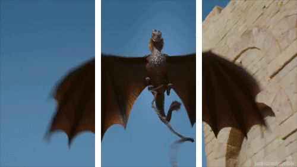

Ooops, parece que você fez uma decisão equivocada que te levou a um erro fatal!
Mesmo tendo duas espadas, essas são armas de curto alcance, o que te leva a se aproximar demais no dragão... fazendo com que você vire um alvo fácil demais para ele.
Clique em qualquer lugar da tela se deseja tentar de novo
